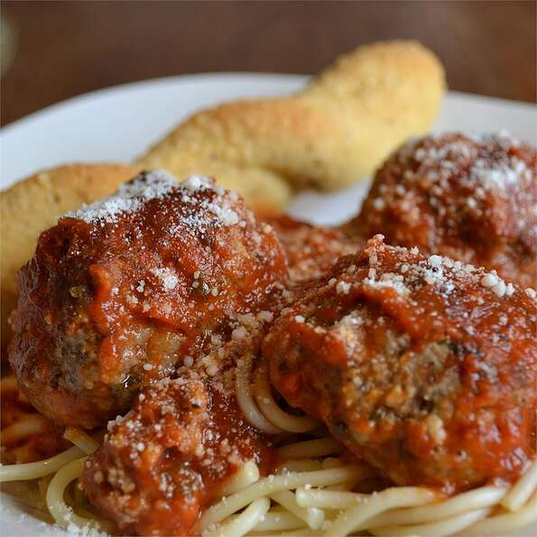

Italian Meatballs
Credits to allrecipes

Description
Baked meatballs seasoned with oregano and garlic, simmered in spaghetti sauce.
- 3 pounds lean ground beef
- 5 tablespoons ground oregano
- 5 tablespoons dried parsley, crushed
- 1 clove garlic, chopped
- 1 (1 ounce) package dry onion soup mix
- 2 cups Italian-style dry bread crumbs
- 3 (28 ounce) jars spaghetti sauce
Steps
- Preheat oven to 350 degrees F (175 degrees C). Lightly grease a 10x15 inch jelly-roll pan.
- In a large mixing bowl, combine ground beef, oregano, parsley and garlic. Mix in onion soup mix and seasoned bread crumbs. Mix thoroughly.
- Using a 1 ounce scoop, scoop and shape the meat mixture into balls. Place in the prepared pan and bake in a preheated oven for 1 hour or until meatballs are browned and cooked through.
- In a large pot over high heat, bring the spaghetti sauce to a boil and add cooked meatballs. Reduce heat and simmer for 4 hours.